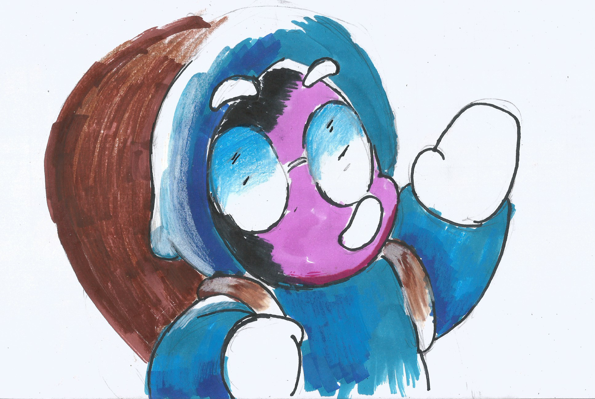

Matematicas
Las matemáticas son una disciplina que estudia las propiedades y relaciones con los números, las formas y las estructuras, esta rama se basa en el razonamiento lógico y la abstracción para resolver problemas y modelar fenómenos del mundo real, esta abarca diversas áreas como el álgebra, la geometría, el cálculo y la estadística, su aplicación se encuentra en campos tan variados como la física, la ingeniería, la economía y la informática.
¿Quieres saber mas? visita nuestra

Osash despues de ir a clases le gustaria aprender mas conceptos sobre las matematicas por lo que va a otro reino.
Proximamente mas capitulos..